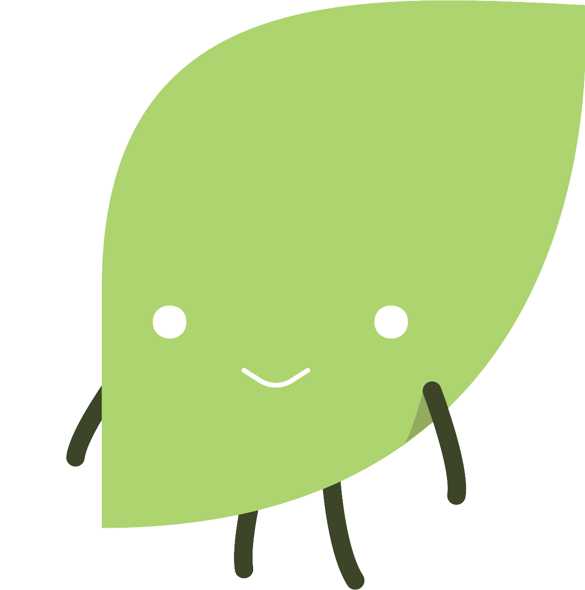

<!DOCTYPE html>
<html>
<head>
  <meta charset="utf-8">
  <title>Project Nourish</title>
  <meta content="width=device-width, initial-scale=1" name="viewport">
  <link href="css/normalize.css" rel="stylesheet" type="text/css">
  <link href="css/webflow.css" rel="stylesheet" type="text/css">
  <link href="css/projectnourish.css" rel="stylesheet" type="text/css">
  <link href="https://fonts.googleapis.com" rel="preconnect">
  <link href="https://fonts.gstatic.com" rel="preconnect" crossorigin="anonymous">
  <script src="https://ajax.googleapis.com/ajax/libs/webfont/1.6.26/webfont.js" type="text/javascript"></script>
  <script type="text/javascript">WebFont.load({  google: {    families: ["Varela:400","Varela Round:400"]  }});</script>
  <script type="text/javascript">!function(o,c){var n=c.documentElement,t=" w-mod-";n.className+=t+"js",("ontouchstart"in o||o.DocumentTouch&&c instanceof DocumentTouch)&&(n.className+=t+"touch")}(window,document);</script>
  <link href="images/favicon.ico" rel="shortcut icon" type="image/x-icon">
  <link href="images/webclip.png" rel="apple-touch-icon">
</head>
<body class="body">
  <div class="w-layout-grid grid">
    <div id="w-node-fa418ed5-cd26-271b-80fb-620cddb924e3-dce62d3c" class="nav">
      <div data-animation="default" data-collapse="medium" data-duration="400" data-easing="ease" data-easing2="ease" role="banner" class="navsub shadow-three w-nav">
        <div class="navbar-wrapper-2">
          <nav role="navigation" class="nav-menu-wrapper-2 w-nav-menu">
            <ul role="list" class="navmenu w-list-unstyled">
              <li>
                <a href="index.html" class="nav-link-2">Home</a>
              </li>
              <li>
                <a href="nutrition.html" class="nav-link-2">Nutrition</a>
              </li>
              <li>
                <a href="recipes.html" class="nav-link-2">Recipes</a>
              </li>
              <li>
                <a href="resources.html" class="nav-link-2">Resources</a>
              </li>
              <li>
                <a href="about.html" class="nav-link-2">About</a>
              </li>
              <li>
                <a href="refrences.html" class="nav-link-2">References</a>
              </li>
            </ul>
          </nav>
          <div class="menu-button-2 w-nav-button">
            <div class="w-icon-nav-menu"></div>
          </div>
        </div>
      </div>
    </div>
    <section id="w-node-_7d46dd35-d8a8-a64f-edc6-eaf76096dc1e-dce62d3c" class="header">
      <div class="container-3">
        <div class="hero-wrapper-two">
          <h1><strong>Nutrition outreach for undergraduates studying sports science and health professions</strong></h1>
          <p class="margin-bottom-24px">The purpose of NOURISH (Nutrition Outreach to Undergrads in Sports Science and Health Professions) is to understand how a multi-media, theory-based nutrition website affects nutrition self-efficacy among students as they prepare for careers in medicine and sports science.<br><br>Follow the links at the top to explore the site!</p>
        </div>
      </div>
    </section>
    <section id="w-node-b9eef084-809d-680f-2dab-693d8460af12-dce62d3c" class="hero-heading-left-3">
      <div class="container-4">
        <div class="hero-wrapper-3">
          <div class="hero-split-2">
            <h1 class="heading-4">Meet our Mascot Leafly!</h1>
            <p class="margin-bottom-24px-2">Look for them on Nourish Projects and Information!</p>
          </div>
          <div class="hero-split-2"></div>
        </div>
      </div>
    </section>
  </div>
  <footer class="logos-without-title">
    <div class="container-4">
      <div class="clients-wrapper-three-2">
        <div>2025. Project Nourish. Kean University</div>
      </div>
    </div>
  </footer>
  <script src="https://d3e54v103j8qbb.cloudfront.net/js/jquery-3.5.1.min.dc5e7f18c8.js?site=65c8d9e274651f26dce62d35" type="text/javascript" integrity="sha256-9/aliU8dGd2tb6OSsuzixeV4y/faTqgFtohetphbbj0=" crossorigin="anonymous"></script>
  <script src="js/webflow.js" type="text/javascript"></script>
</body>
</html>